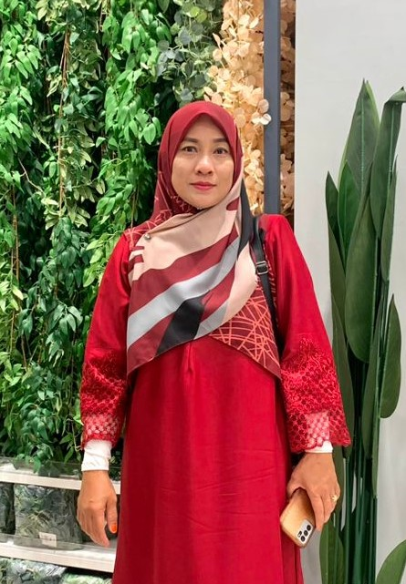
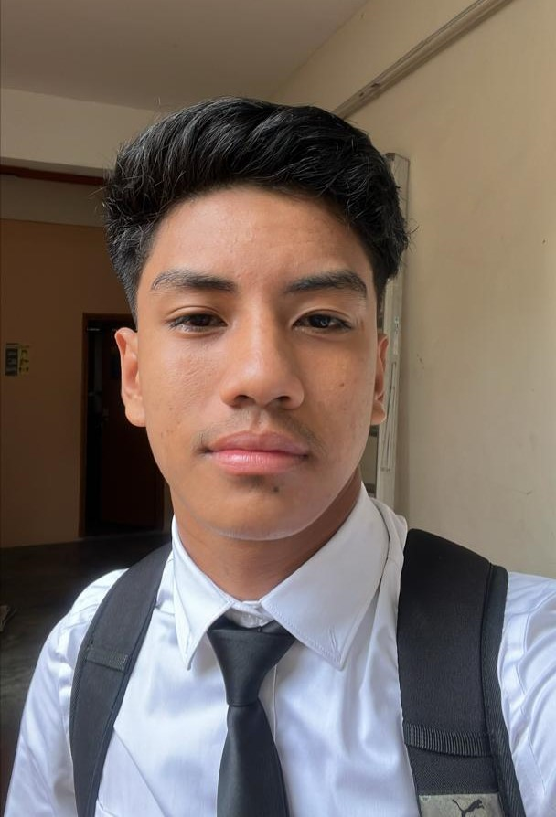
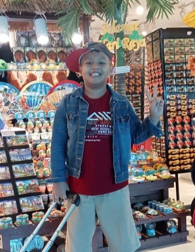
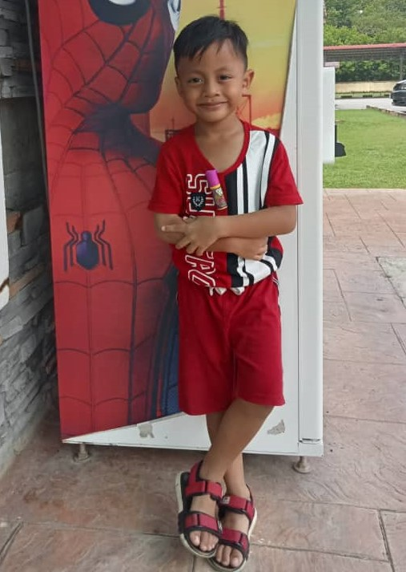

My family is very important to me. I have 4 siblings and wonderful mother who have always supported me. We enjoy every moment that we spent together. They are my biggest source of happiness and strength. Let's get to know them!
| Photo | ⋅♡⋅About Them⋅♡⋅ |
|---|---|
|  | This is my mum, her name is Norsah Binti Amis. things that i love about her was she is so supportive. She will always support anything that all of her child are doing and always be there for all of us through everything. She always do as best as she can to fulfill all of our needs. She is a single mum yet, she is strong and raised us with full of love by her. We are so lucky to have her as our mother and get to call her our "mom". |
|  | This is my brother, he's the 2nd child in our family. His name is Mohamad Iszam Hairul bin Iskandar, people call her as "ijam". He is one year younger than me. He is now are futhering his study at the KPM Bandar Penawar, Johor Bahru. Ijam are very active in Rugby. Basically he's a rugby player since he was 10 years old in his primary school until now at his College. I am a proud sister seeing he achieved every achievement in in his life and wishing the best for him always in everything that he do in his life. |
|  | Muadzin is the 3rd child in this family. His full name is Mohamad Muadzin Ismail, he is 10 years old. We in this family call him as "abang". Abang, he is someone that love to make a joke. He loves to make us laugh with his jokes. Since me and Ijam leaving our house for study purpose, Abang are the one who take care of our little brother. I am so proud of Abang because we can depend on him to take care or our last little brother. |
|  | Adik is the last one child in our families, he is 6 years old. His full name is Mohamad Nazran Firdhan and we call him as "adik". Adik loves cat so much. He has a cat named "oyen" and he spent most of his time taking care of his cat like his own little brother T_T. Since he is the last one, he is so clingy with us yet he's so independent which is he do everything by his self, unless he can't afford to do it then he will ask for help. Adik is so friendly with everyone and he is so talk-active.That is what make us love him so much <3! |